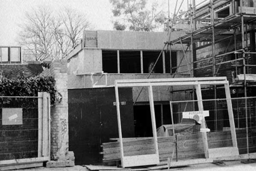

About 115: an interview
Peter Brawne interviews the founders
I’m seated round the table here in the communal kitchen of 115 Bartholomew Road in north west London’s Kentish Town with Robin Kinross, one-time freelance writer for a variety of design journals, now writer, editor, sometime designer and publisher of books on typography, architecture and design under his own imprint Hyphen Press since 1980. He is also an occasional speaker at typography-themed conferences here and abroad.
Dan Monck and Duncan Kramer are here too. They have been in working partnership for nine years and now have their own company, Material which designs and produces objects from portable exhibition display systems to outlets for take-away sushi. They are also the designers of this building. That is to say, they occupy a role where the term ‘architect’ is insufficient: there are an unusual degree of bespoke elements dotted about the building from recessed lighting, balustrade handrails to non-standard, non-off-the-peg doors and windows for which Material are responsible.
These three – along with John Morgan, a graphic designer who has since left – formed the core group and subsequently became directors of Workplace Co-operative 115, the structure which manages this mixed-use building and it’s occupants.

115 has been up-and-running for over two years now. We can talk a little about what, as founders, you think of it so far and how you see it developing, but first for those who know little of its origins I think it would be interesting to hear a little of the history.
Peter: Robin, I know that initially you were a client of Duncan and Dan’s looking for a live-work space. How did this mutate into the present work-only set-up for a wider group of people?
Robin: I had asked Dan to be the architect or designer of somewhere where I was going to live and work, and we found a place in what was one of the early London loft developments, in Clerkenwell. They were selling leases on shell units in an old industrial building, each one to be finished by the purchaser. At a certain point I woke up and realised that it was probably going to be a very awful development: it wasn’t appropriate and I didn’t really believe in it. So I stopped that. Well by then Dan was a friend, Duncan was a friend. The three of you were having to move out of your building in Kingsland Road. At some point I remember you, Duncan, said ‘why don’t we look for a common building’. We shared quite a lot of ideas and things together. So then the utopian idea of a shared building came up, and that was the germ of this place. In my mind it wasn’t at all clear. I just had an urge to try and do something. In those early stages there was still the idea that I would live there, and other people would live there too. So it would be a live-work building, but quite a big one. Then after a long time of looking at existing buildings, with property prices rising every month – Clerkenwell became impossible as a place for this – eventually the building in Bartholomew Road came up. It seemed appropriate to me, at least. Dan and I visited it and just decided to go for it.
Peter: If my memory is right, before this there was that ex-record-pressing plant just off the Holloway Road, and other places.
Dan: Draft schemes were done for that one and for a small building off the Essex Road.
Peter: So what was it about this site that seemed right?
Dan: Here the scale just seemed right. The record-pressing plant was quite a lot bigger and it was an awkward site in that it had a narrow road frontage. Also the the scale of money that would be involved was greater. I think we lost it to somebody else.
Robin: Yes, it became a housing development.
Peter: We should talk about how the funding process happened.
Robin: It all started because I had a lump of money that had come to me completely unexpectedly. It was almost exactly enough to buy the freehold of this site – £200,000. It seemed to be exactly the right thing to do with this money. Then I financed the first stage of the development, broadly to the shell stage. This is compressing a lot, because it took a long time to work it all out, but in outline that is what happened. During this time we set up the company or the co-op, which became the means to borrow money and oversee the rest of the development, and then run the finished building.
Dan: Peter, you said in your introduction that we (Robin, Duncan, John and I) were the founders of the company, Workplace Co-operative 115 – but eventually, when all the leases are in place, we might not still be directors, because this will be the subject of an annual election.
Peter: In tandem with designing the building, Dan, you were largely responsible for setting up these novel structures to finance and manage the building. Can you say how much, if any, of this other kind of work informed the design process itself?
Dan: I don’t think the legal structure has informed the design process. I suppose that the utopian dream that Robin talked about earlier has informed the design process, and it informed the structure that we evolved. I know that Duncan spent a long time trying to come up with suitable legal structures – trusts were considered, for example – to try to democratise it. So that, despite the fact that Robin is the freeholder, there was a democratic structure to finish and manage the building. I think we do have that now.
Robin: It took one false start before we got there. With the second firm of lawyers that we went to there was one person in particular who immediately understood what we were trying to do.
Duncan: As I remember, at the start we didn’t think about you being the freeholder. We were looking for ways for it to carry on independently in perpetuity. The first lawyer had experience in setting up charities and similar structures. With him we realised that there wasn’t a simple precedent for what we wanted to do, and that we would get into writing new law, which would be very expensive. Then we moved to the second lawyer.
Dan: It was the pragmatic way of resolving the problem. The freeholder can’t give the building to nobody. That isn’t possible. But that was sort of what we were trying to achieve with our first thoughts.
Robin: Yes, I had no wish to be a landlord and did think of giving the freehold away. But the pragmatic solution was for me to retain the freehold but grant the co-op a twenty-five year lease at no rent. So then I play the role of a benign presence, and there is no unpredictable or threatening landlord. For me it is quite an ideal solution.
Duncan: All Robin needed was a little pot in which to put twenty-five peppercorns.
Peter: Obviously the process of design went through many stages. Can you summarise the design phases, between the original ideas and what is actually here, and say how many changes were due to external factors like planning or cash constraints, and how many were internal influences like changing from live-work to just work, or designing with a set amount of inhabitants in mind.
Duncan: You’ve said almost all the things it was – it was definitely a long process, which started with establishing a brief. We tried to anticipate the brief that the co-op would have given us if it had been fully established: how many work-units we could put on the site, how many people might work within the spaces. At the start I think we proposed two live-work units, but the Camden planners said only one live-work unit on the whole site, and that would have been for Robin. Eventually he rejected that idea on the basis that he would in effect become a caretaker in the building. The planners did have an effect in all sorts of ways: they required obscured glazing on two aspects of the building for example.
Peter: But do you feel now, looking at the building, that you are happy with the compromises made, or do you wish that you had pushed harder for all the things you wanted?
Duncan: I think we did push quite hard and that we have got a great deal of what we set out to achieve. It is an interesting mixture of things that Dan brings to the building and that I bring to the building. There are things that predate the building that are to do with Dan, and things that are to do with me – really its a product of our collaboration. But Robin influenced the building as well, because we were presenting the building to him, and to a few other people, as we developed it. What he fed back from that would influence us.
Dan: I think there are lots and lots of parameters or things that contain the site. That’s true of any site. Certainly the planners had quite a strong influence. There was one time when we came out of a meeting, and Duncan had great difficulty in containing my anger and irritation with the conservation officer from Camden. I was jumping mad because I felt she was talking rubbish. But actually the upshot of what she required ended up with us doing something that I think is OK. The only consequence of something which the planners insisted upon which I think is a problem is on the top floor. The door into the top-floor unit was originally designed to come into the middle of the space, and that would have been much better, because it could then have been divided into two spaces, which might have been more appropriate: the whole space wouldn’t have felt like it was quite a long corridor, one of the biggest floor-plates in the building. That was a direct consequence of the planners.
Robin: One thing to say here is that the previous building on the site had been unoccupied for two or more years. I always thought that it was too difficult a site for any quick-bucks developer to want to bother with. It would have only been people like us with crazy concerns for detail, and not needing to make big profits, who would take it on. I always felt we were doing a service to the neighbourhood. Camden should have been very pleased with almost whatever we did!
Peter: I don’t quite get the point about it being too difficult for a developer.
Duncan: There’s a Grade II listed building on one side, residential back gardens on another side, a tall business centre on another side and the street on the fourth side. So there are four quite different conditions. The listed building had an influence on the design of this one, in terms of height and mass. The front of the building had to respond to the nature of the street.
Dan: Someone would have done something with it eventually, but it would almost certainly have been residential. I don’t think it would have been a workplace development. The fact that this building is here, making it three buildings in a row, means that this is genuinely a little strip of workplace development in Kentish Town, which almost inevitably will remain so.
Peter: Can I ask Dan and/or Duncan this: I think it would be fair to say that 115 was a quantum leap for you both. It was the first job in which you have had to design from the ground up, and to supervise construction – liaising with builders, electricians, plumbers, chippies, and so on. What are the main things you have learned from that?
Duncan: It did follow on the heels of designing the house for Dan’s mum. But you’re right, that was on a completely different scale. But I guess it had the same cycles of process about it. The one thing I’ve learned from this is not to take on anything of the same size again – as two of us, over that period of time.
Dan: From conception to completion it was five years.
Duncan: That’s very hard to sustain between two people over that length of time.
Peter: So you’re not saying you wouldn’t do it again, but you’d do it differently and with more people?
Duncan: It needs to be organised differently. Financially would be one very good reason for doing that, but also just for the sake of sanity. There were times when I was so desperate for it to be finished, and it didn’t feel like it would be, it really didn’t. It just carried on. I assume that was the same for you, Robin?
Robin: My reaction was just to switch off. I always felt a bit guilty that I wasn’t being a good enough partner in the process, and I never said ‘this is no good, do it again’. I wasn’t so engaged in what was happening, because it just seemed to go on and on.
Peter: But as a client, wasn’t that your part to play?
Robin: Yes, but I also tend to like everything you two do, so that brings difficulties.
Dan: At one point I did want to put Robin up for the ‘client of the year’ award.
Robin: But actually I do feel close to what you do. It usually seems to be just right. I could have been a better client, in the sense of being someone who pushes.
Dan: It might have been achieved quicker with a bit more pushing. But to go back to the question of what we learned from the quantum leap. I remember talking to you, Pete, years ago, after I had finished my degree in architecture, and thinking ‘I’m just going to go and make small things’, and you said ‘but don’t you ever want to make a building?’ You were incredulous. I quite often remember that. I remembered it when we were making my mum’s house, but I thought ‘this is just for my mum, and it’s a little house, and it’s not really a proper commission in that sense’, although it actually was. But now I remember that conversation and think ‘well, I’ve done it Pete’.
Robin: But do you think the same as Duncan – never again?
Dan: Never again without a different way of doing the design, which means having another partner, or two or three or four collaborators.
Peter: Surely one of the reasons that it took five years, as I touched on earlier, is that there wasn’t a standard client, and at the same time as designing the building you were setting up structures that could accommodate how the building would be run. So that even though it might have been painful – and Robin used the word ‘utopian’ – we’ve ended up with something very different and very special. You could work for just one or two years on something much more straightforward, but the end result might not be so rewarding.
Dan: Certainly. As someone said, we built an organisation as well as a building, and that took quite a long time. We also had to borrow money to finish the building, and all of that took a lot of work.
Duncan: Also, we couldn’t find off-the-shelf building components. Or the ones we really liked were outside the budget. So we designed almost everything.
Peter: Duncan, I know that materials and their application, along with how colour is used, are major concerns for you. Can you elaborate on those concerns and how they have been applied here?
Duncan: The first thing to say is that we both come from a making background. We both trained as makers. That influences the way we see designing. We think things through in terms of how they are made, as well as in terms of all the other concerns.
Peter: But why have you put non-standard doors and windows in? Why didn’t you choose off-the-peg? I’m not saying you should have done, I’m just interested in the thinking behind those decisions?
Duncan: Because the components available simply didn’t meet the demands we’d set for ourselves. It was also the fact that we had the opportunity to think about every component: what it does, and why we wanted it to be a particular thing. I know when other people visit the building they point out certain things, like the fact that the vision panels in the doors are horizontal rather than vertical. The reason was that the doors were designed to have something added to them – a display cabinet.
Peter: And what about colour? I know you’ve recently finished an MA thesis on colour [Our lives in colour, MA Design Futures dissertation, Goldsmiths College, September 2003].
Duncan: Most of the colour is in the materials in their natural state, though there is also quite a bit of applied colour. Obviously there are paint colours, which were all carefully chosen. For example on the steel the colour represents the nature of the material itself: the very light blue seems to my senses quite an appropriate colour for the steel’s appearance in that space. It does read like natural steel, even though it’s light blue. It’s not literally natural, but maybe there’s more of a subconscious relation to the material.
Peter: Are there any details that you’re particularly proud of?
Duncan: There are some very lovely simple things, like the door reveals being cut common concrete blocks. They are such a standard component, such an inexpensive component, but when you cut through them, they reveal the aggregate, which then suddenly jumps into the realm of terrazzo or marble. The use of the Reglit glazing gave us what the planners required, which was obscured glazing to the north, and it also gives a very beautiful quality of light, as well as a green cast.
Dan: The single detail that gives me most daily satisfaction is the handrail going up the stairs. It gives me pleasure each time I slide my hand up it – a feeling of comfort.
Peter: You two took part in an exhibition organised by the Crafts Council [making buildings, Crafts Council touring exhibition, April – November 2001], which was very much about process. There were some bits of film showing the making of the building. Could you say something about how process is important to you, as something in itself.
Dan: I think the overwhelming feeling is of mess. You just don’t ever understand how much chaos and disorder goes into making orderly things. I think that’s always true. As in a steelworks and seeing sparks flying everywhere; or on the building site here with mud everywhere, because when it began it rained and rained and rained. I have the sense that in every building there is a great overcoming of the elements – as you see them in that flood disaster in Cornwall this month.
Duncan: The films we made for the Crafts Council were about block-laying, about asphalt work and about carpentry. It was amazing at the exhibition – there were a number of architects who had never actually seen asphalt being poured. That seemed significant to me. One of the reasons that we wanted to do the exhibit was what we felt was the undervaluing of the making processes – not the value of what I do as a designer – and yet they are completely integral to the outcome of the building.
Dan: Why I go to the chaos and the mess is because I think there is order to all of those processes, and there is technique, but there is also a lot of splatter, disorder, danger. One of the criticisms that we got in the visitors’ message book at the Crafts Council was about the lack of health and safety on the site, which was in some ways a justified criticism. But I think the reality is that you cannot eliminate risk and chaos from pouring hot asphalt.
Robin: Didn’t the comment say the builders weren’t wearing the right shoes?
Dan: Yes. In that sense – from a health and safety point of view – it was a badly run site. And yet there were few injuries. There were probably fewer injuries than there are on some big, high-profile, full-time sites. I suspect that was because there wasn’t too much pressure. You can have all the hard-hats and all the handrails on site, but pressure can be the main source of danger.
Duncan: Most of the exhibits in the Crafts Council exhibition weren’t about making buildings. Typically they were models or pieces of finished buildings. But we wanted to make something about the work that is actually done by whatever percentage of people work in the construction industries. It’s a lot of people.
Robin: That was one period in which I did get annoyed, because I felt you were making the film rather than the building.
Dan: We got distracted.
Robin: But in a way the whole project did have that character. There was a bit of pedagogy in it all.
Peter: There was a self-consciousness about it?
Robin: Yes, but that seemed a good thing.
Duncan: It was meant to illuminate the process, just as quite a bit of the building reveals how it is made and what it is made from.
Peter: When we first came here some people said ‘when are you going to paint the walls?’ as they saw them as ‘unfinished’. Now that sort of comment isn’t said so much. I think it’s good we’ve talked about process. Often this is ‘invisible’: architectural magazine articles tend to fixate on the finished building; fetishize it at the expense of their making. The article in Domus [Domus 865, December 2003, pages 100-105] was great because there were people in the pictures: perhaps the only article in the magazine that had that. Among architects and designers, it’s not unusual to look at the success or otherwise of things (a new building in this case) in purely aesthetic terms. Here, as I think Domus showed, the inert and the living combine, and the success or otherwise of 115 has to be seen in that context. Do you think 115 works? And how much of this is down to the space and its design, and how much is it down to the people and their actions and interactions?
[long silence]
Peter: OK, next question!
Dan: I think it does work – I think about this quite often – and I think it’s more about the people.
Peter: I’m asking you this as the designers of the building and as people who occupy the building. Both creators and users.
Dan: I think the building does let us feel good about all being here. In that sense it makes it easier for us to enjoy each other. I do enjoy everyone in the building – I enjoy the people. For example, this little room here. I always worried that it was going to be too small, this kitchen – but actually it’s just about the right size.
Duncan: I think the building has a dramatic impact on the way people are. I’ve not heard anyone say that they find anything particularlymean or shitty about the building.
Dan: Doors slamming?
Peter: But that’s a quibble.
Duncan: I mean there isn’t something that would have been nicer if it had been thicker or longer or higher. There isn’t anything that feels like a shortcoming in your experience of moving around the various spaces. I think there is a general level of pleasure about this, because there aren’t voices nagging away saying ‘it could have been better or different’.
Robin: It’s also not forbidding in the way that some very beautiful buildings are, where you don’t want to disturb the wonder of the finish. The way people have put up their own shelves, or put things on the walls – there doesn’t seem to have been very much inhibition about that. There are enough modern buildings in which people have made their own little patch, but in defiance of the high-techery, with holiday postcards and so on. We put up postcards here, but it doesn’t seem to harm anything.
Dan: I think it’s partly that everyone is quite sensitive to each other and to the building.
Peter: It’s an unusual thing to build a place for yourself and other people, some of whom you already knew and some you’ve now come to know – and to be able to influence the relationship between the people and the space; how one rubs up against the other. That’s the question.
Dan: I suppose if you compare it to the places where we used to work – Kingsland Road or Orleston Road – well, we did quite a lot to both of those places, to make them better buildings in which to have good relations. We did generally have good relations there, and the fact that we made them nice as soon as we moved in, and continued that process while we were there, contributed to us getting on well with each other – and sometimes not, as we may well find here.
Duncan: Both of those buildings had quite big experiential or environmental problems: freezing cold in winter, boiling hot in summer. Here it can be cool in the summer and warm in the winter. It’s the fact that we’ve changed all of those things that we’ve been used to over the years.
Peter: That’s the major thing, isn’t it: when you build from the ground up to create something from scratch, for a purpose? Whereas where you worked before was always adapting to something else.
Dan: It was always temporary, whereas this feels like we’ll go on, adapting and improving it.
Peter: Can I ask you, Robin, as it’s you who has largely facilitated 115, how do you gauge it personally? How has your own practice changed or been shaped by your new non-domestic space, surrounded by other working people.
Robin: Yes, I used to work from home. It’s changed an awful lot, for the better. Maybe there are two things. I feel much more connected to other people. There are people around with whom I talk and occasionally seek advice from, and perhaps I can help them too. Plus there is a real sense of being in a place. People come here to visit me, perhaps for a difficult meeting, and I have a feeling of support from the surroundings, which I never had before.
Peter: No regrets then?
Robin: No, not at all. It feels exactly the right thing. As a publisher you’re part of a network in every way, and this community is another network. The 115 website will be another node on the network. The building is the physical node. Things have happened already, like the fact that Katherine has done some work for me. I had no idea that she would be in the building, that she could help with my database. So, it’s been great.
Peter: There have been quite a few people who have left, or who are in the process of lessening their involvement here. I’ve counted them up – there are about nine people. Obviously there are lots of different reasons for all this. But in the course of about two years, that’s quite a lot of movement. I don’t think that was foreseen. In addition, there are a number of people who are part-time or who teach. So it means that the building often feels slightly under-used. Do you think that the structure that we have in place is the best one, or could it be changed to help retain people, or to allow part-time people to work here in different ways?
Dan: I think that maybe we need to choose people who will be more stable. Or we need to have a good number of people who are quite stable in their activity – who have been doing what they do, and where they are doing it, for quite a long time – when they decide to come here. That’s not a criterion we’ve considered enough. I’d certainly like this from an administrative point of view. I’m also very pleased to have met the people who haven’t stayed long.
Robin: It’s a function of having people here who are still just starting. They are very liable to want to move on. It’s part of the deal. Maybe you just accept that at any one time there might be say three of that kind of person, who might only stay a year or eighteen months. As far as I ever thought about this before, I imagined they would all be well-established people who would be here for ten years. Now I’m quite pleased it isn’t that.
Peter: There are benefits to having a turn-over of people – you meet new people – but it can feel disruptive: you don’t get a chance to build up long-term relationships.
Duncan: I think it’s about everyone gaining experience. We’ve had the experience of two previous workplaces, and we’re not repeating some of the mistakes that were made there. But there’s a whole new set of things to think about in this situation – learning not to kid ourselves about various matters is one thing.
Dan: The unit that’s changed its personnel faster than any other is unit 6. Maybe we can change the status of that unit in some structural way, to enable it to be fluid and to expect that it’s more fluid than the others. That’s just something off the top of my head.
Duncan: I think that’s just something that happened. It might be that with the new people there it’s stable for five years or more.
Peter: What are the things – people, activities, equipment, projects, whatever – that could change, improve or develop 115?
Dan: Well, the cupboard around the boiler in the kitchen would help a lot. Changing the kitchen table to one without a clanking glass top –
Duncan: I think, and it’s something that is happening, is everyone understanding the nature of the building more. It’s interesting that Robert [Bradbrook] has been saying that he’s only now starting to really understand what it’s all about. Various people admit that previously they did not understand quite a lot about the building. They’ve been pleased by what they have learned about it, but they didn’t start with that as their understanding. I think that would be one thing: a faster uptake of understanding.
Dan: We’ve been lucky that we haven’t had any serious misunderstandings with the people who have moved in, who haven’t understood about the building. You know: ‘Isn’t there a landlord who just does all that?’ Everyone, once they’ve understood that they are a part of the landlord role, has mostly been very willing to at least consider it and to feel involved, even if sometimes people put different amounts of physical energy or time into that role. No-one’s said ‘sod that, I’m not going to come to the meeting’.
Peter: What one ambition does each of you have that you think 115 could help realise, which you think would be difficult to realise anywhere else?
Robin: Great parties.
Dan: Good parties. But also to collaborate with other people in the building. I do have that strong ambition. I’m always looking for opportunities. We haven’t found that opportunity that much yet, other than the really good one that we did with Maarten, which is now finally about to happen. I’m very keen to do others.
Duncan: For me this is actually a living and breathing example of Dan’s and my work, but also everyone’s being here. It is a very constant pleasure. People come round and you’re able to show them a physical building.
Dan: It does come full circle to a ‘model and construct’ [Models & Constructs : margin notes to a design culture, Norman Potter, Hyphen Press, 1990]. Isn’t that the meaning of ‘model and construct’?
Robin: I’ve forgotten.
Dan: I think ‘construct’ is an actual thing, and ‘model’ is the idea. What did you call it when you were complaining about us making the video? ‘Pedagogic.’ A model is pedagogic.
Duncan: It’s when people stand in the atrium and say ‘this feels really nice’, then I’m impressed. Because they’re not looking at any one particular thing, they are experiencing the ambience. I can’t imagine that wearing off as a pleasure.
Robin: I think what I’d like to happen is not just parties but, what we’ve always talked about – exhibitions. Building-wide exhibitions.
Peter: I haven’t got any more questions, so has anyone got anything more they want to say?
[the 60 minute tape ended here]
17 08 04